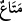

erenler arasında olması umulur.
“Size verilen şeyler, dünya hayatının geçim vâsıtası ve süsüdür.”
Âyetin başındaki “”, mübtedâdır ve haberine “ ” dâhil olduğu için şart mânâsını
” dâhil olduğu için şart mânâsını
içerir. İkinci “ ” ise “ mânâsında mevsûledir. Hitab, Mekke kâfirlerinedir. Nitekim
” ise “ mânâsında mevsûledir. Hitab, Mekke kâfirlerinedir. Nitekim
el-Vasît’de bu şekilde kaydedilmiştir.
Yani, size dünya hayatının gereği ve sebepleri olarak verilen şeyler, bu geçici hayatın
metâı ve ziynetleridir. Belirli ve az günlerde faydalanılan ve süs eşyası olarak
kullanılan şeylerdir, sonra siz ve onlar yok olur ve zevâle uğrarsınız. Bu yüzden dünya
menfaatlarine “ (eşya)” denmiştir.
“Allah katında olanlar ise, daha hayırlı ve daha kalıcıdır.”
Allah katındaki sevab ise sizin için, bizâtihî bu şeylerden daha hayırlıdır. Çünkü
âhiret sevâbı, elem ve acılarla karışık değildir; hâlis ve lezzetlidir; yaşlılık gibi
illetlerden de uzaktır ve insanın sâhib olacağı mükemmel bir güzelliktedir. Ve âhiret
nimetleri devamlı ve ebedîdir.
“Hâlâ buna aklınız ermeyecek mi?”
Bu apaçık şeyleri düşünemiyor ve akledemiyor musunuz? Çok basit ve bayağı olanı,
daha hayırlı olanla değiştiriyorsunuz. Küfür ve günahlardan hâsıl olan şakâveti, îman ve
tâattan hâsıl olan saâdete tercih ediyorsunuz.
Acaba anlayıp idrak etmiyor musunuz ki bâkî olanı fânî olanla, beğenileni kusurlu
olanla değiştiriyorsunuz?
Bir avuç la’l tâşını ve altını verip
Karşılığında toprak ve taş almak yazıktır
61. Şu halde, kendisine güzel bir vaadde bulunduğumuz ve ardından ona kavuşan
kimse, (sırf) dünya hayatının geçici menfaat ve zevkini yaşattığımız, sonra kıyamet
gününde (azap için) huzurumuza getirilenler arasında bulunan kimse gibi midir?